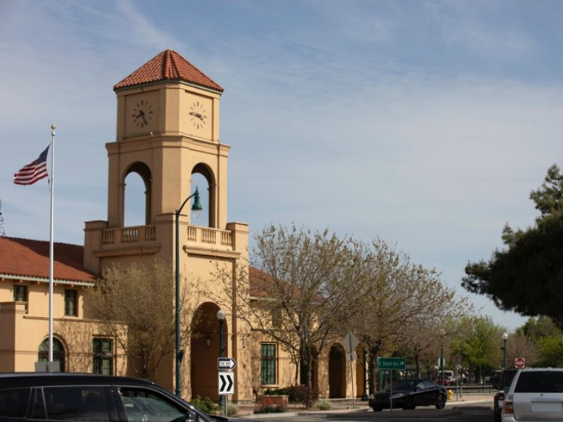
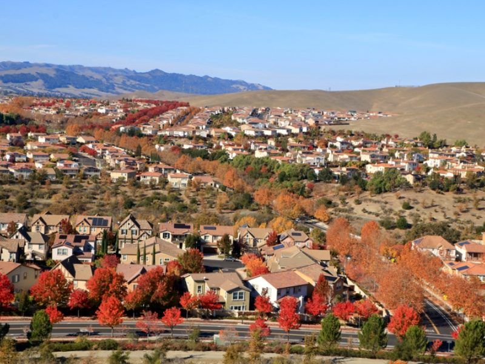

Tracy
Historic downtown. Room for a new chapter.
Agent4Life’s home base, with an office on East 10th Street. Start a conversation about the parts of Tracy that fit your search.
View Tracy properties Ask about TracyMountain House
A different pace, close to Tracy.
Explore Mountain House with your space, timing, and daily routines in mind. The team can help you compare the available homes.
View Mountain House properties Ask about Mountain House
Lathrop
Explore what’s taking shape.
Consider Lathrop alongside neighboring Central Valley communities. Talk through home styles, location, and your priorities with the team.
View Lathrop properties Ask about Lathrop
Manteca
A Central Valley possibility.
Make Manteca part of a focused local search. Bring your must-haves and the team can help you decide where to look next.
View Manteca properties Ask about Manteca
Dublin
Make the Tri-Valley part of the plan.
Compare Dublin with your other preferred areas. Emad and the team can help you connect your budget and goals to a practical search.
View Dublin properties Ask about Dublin
Livermore
A place to explore, a move to plan.
Consider Livermore as part of your Tri-Valley search. Discuss the homes, timing, and priorities that matter to your next chapter.
View Livermore properties Ask about LivermoreLet’s put a plan behind it.
Talk directly with Emad about your next move.